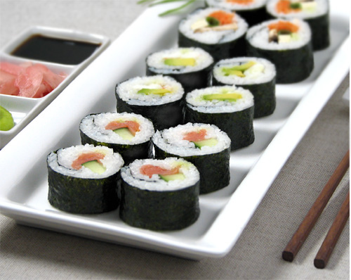

Maki
Maki is a type of rolled sushi. It is made by first putting sushi rice onto a sheet of nori, then adding any number and combinations of ingredients. Common rolls are listed below.
Common Rolls
California
Crab, cucumber, avocado
Tekka Maki
Tuna
Sake Maki
Salmon
Spider Roll
Softshell crab tempura
Rainbow Roll
Tuna, salmon, halibut, avocado, daikon sprouts

Maki: rolled sushi